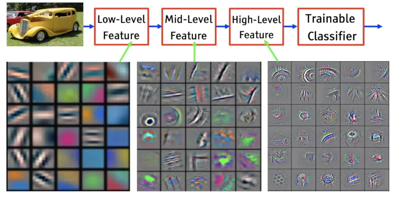

Intelligence Chases Chaos

Fractals have an astonishing property: their dimensionality is only a fraction of the space they inhabit. The paths of hurricanes, the spread of wildfires, the beating of the human heart—all of these chaotic systems play out in a space far smaller than their theoretical possibilities.
One way of better understanding fractal dimensionality is to understand that it’s not a dimension at all, it’s way of understanding how dimensions change through scaling.
A good way of understanding this phenomenon is to try and measure a coastline.

As one shrinks the resolution of their measurement of a coastline, the length one measures will change, but the amount of change is typically bounded within a given range.
Neural Network Fractals
Neural networks, especially deep learning architectures, actually exhibit fractal-like properties in their information processing and representational spaces. Just as fractals demonstrate non-integer dimensionality by creating complex structures through recursive self-similarity, neural networks generate intricate representations by layering increasingly abstract and self-similar feature transformations.
Consider convolutional neural networks (CNNs) as an example. As information passes through successive layers, the network progressively extracts features at different scales and levels of abstraction - much like how a fractal reveals different geometric patterns when you zoom in or out. Each layer can be thought of as a kind of “scaling” operation where local patterns are transformed into more global, complex representations. It is a sort of map of the chaos that exists at different levels of abstraction. And, it’s clear that the model is learning some of the same patterns at different levels of abstraction.

The fractal-like behavior emerges most clearly in how neural networks handle high-dimensional data. When processing complex inputs like images or language, networks don’t simply map inputs to outputs linearly. Instead, they create multi-dimensional, non-linear transformation spaces where local similarities and global structures coexist - precisely the kind of space where fractal mathematics becomes compelling.
Researchers like Geoffrey Hinton have even suggested that neural network “feature spaces” might be better understood through fractal geometry than traditional Euclidean approaches. The networks generate representations that are neither purely low-dimensional nor simply high-dimensional, but exist in a kind of fractal in-between state. He gives some of his most recent insight on it here
More concretely, techniques like fractal interpolation and fractal compression have direct computational analogues in how neural networks learn and generalize. Both involve recursive strategies for capturing complex patterns at multiple scales of resolution. This holds for images in several senses. Transformer models can “hallucinate” parts of an image at any scale, and language models can condense or expand text handily through summary or extrapolation.
The Fractal Shortcut to Understanding
Artificial Intelligence is often accused of being “brute force,” of needing endless data to approximate human intuition. But intelligence—biological or artificial—works because the world isn’t as high-dimensional as it seems. The constraints of physics, economics, and even human behavior force events to unfold along surprisingly low-dimensional manifolds. Chaos, for all its turbulence, is confined to a fractal space. While there may be “No Free Lunch” from a pure statistical point of view, we thankfully live in a statistical world that happens to also be chaotic.
This is why deep learning models, trained on quintessentially chaotic market systems, can predict stock trends better than random guessing. It’s why language models, given enough text, can anticipate our next words with uncanny accuracy. They aren’t solving the problem in full dimensionality—they’re following the fractal contours where reality actually unfolds.
AI as the Ultimate Chaos Hunter
If intelligence is about making sense of complexity, then AI is the ultimate tool for chasing Chaos. Traditional physics tries to model the world with explicit equations, but AI sidesteps that limitation. It doesn’t need the equations or full rules of a system—it learns the shape of Chaos directly from observation. Neural networks extract the latent structure from raw events, distilling their fractal dimensionality into something even smaller: a compressed model of reality that understands the large and the small, and how they can relate.
This is why AI-driven weather prediction is overtaking classical models. Why AI in finance can detect patterns even seasoned traders miss. And why AI in science is accelerating discoveries faster than human intuition alone ever could.
Intelligence—ours or artificial—isn’t ultimately about conquering Chaos. It’s about finding its shape in the areas we care about, and learning how to ride its back. Part of my goal this year is to integrate more fractal consideration of data in my projects this year…. Oh and also to remember to hold on with both hands.
© Copyright 2024 Justin Donaldson. Except where otherwise noted, all rights reserved. The views and opinions on this website are my own and do not represent my current or former employers.